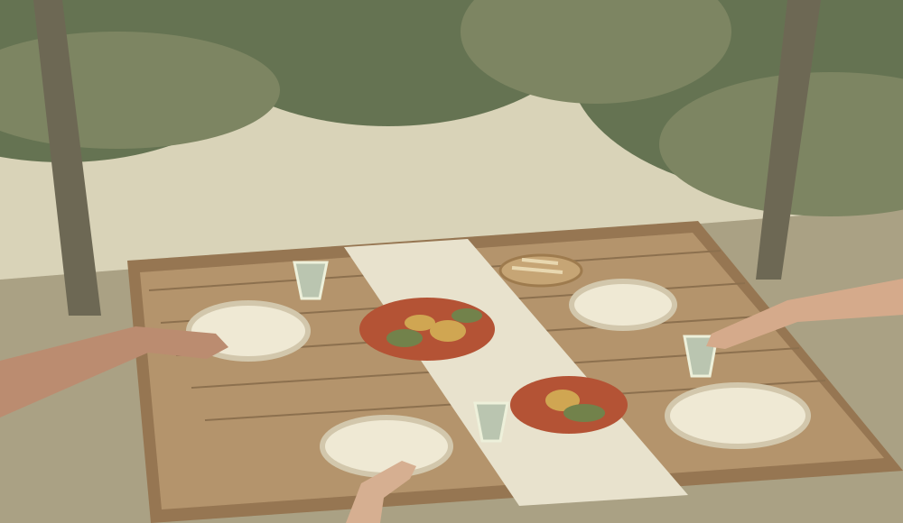

Original sample editorial notes for this fictional magazine. Reporting, travel details and contributors are illustrative, not verified recommendations.
No shop or checkout is connected. The sample magazine has no products for sale.

ORIGINAL EDITORIAL ILLUSTRATIONFOOD
The long lunch is back, and it never really left the south of Italy
In Puglia, Sunday lunch still starts at one and finishes when the light goes. A sample dispatch from a slower kind of table.
THE SLOW CROSSING
TRAVEL
The slowest way across the Baltic is also the best
A night ferry, a cabin with a window and nothing to do until Helsinki.
MADE BY HAND
CRAFT
Inside the pottery that makes bowls for half of London’s restaurants
Six people, two kilns and a waiting list that runs into next summer.
CRUST & CRUMB
FOOD
Is this the best sourdough in the north?
A fictional tasting notebook from Leeds, Newcastle and York.
THE WEEKEND RECIPE
Slow roasted tomatoes
with garlic and thyme
Prep 10 minutes · Cook 2 hours · Serves 4
The one thing worth turning the oven on for all afternoon. Eat them on toast or stir them into pasta.
Get the recipe ↗OPINION
MOST READ
TRAVEL
More travel ↗THE OTHER WAY THERE
A week in the hill towns of Umbria, by bus
No car, no plan and the best dinner of the year in a town of 400 people.